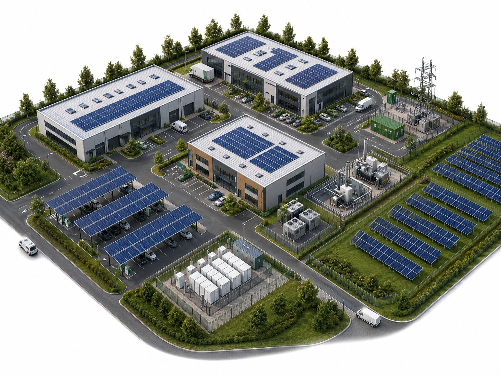

Demand follows trading hours, with preparation before opening and cleaning after closing. Refrigeration sets a high base load in food retail and hospitality.

What to check first
- Refrigeration and display cases without night blinds or covers
- Signage and display lighting on timers that run all night
- Kitchen extraction and equipment switched on long before service
- Heating and cooling running to an old schedule after trading hours changed
- Seasonal hours that never made it into the building controls
Setting the opening hours
Include preparation and cleaning time in the opening hours, so the out-of-hours figure shows what is genuinely avoidable.
These are starting points, not rules. Every site is compared with its own calendar, so the hours matter more than the sector.
Questions people ask
Why is our base load so high?
In food retail and hospitality it is mostly refrigeration. Night blinds, door seals and set points are worth checking before anything else.
How do I compare several shops or venues?
Load one file per meter. The analyser ranks sites by out-of-hours excess and has an estate comparison by building type.